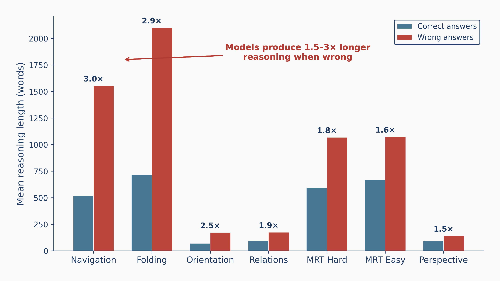
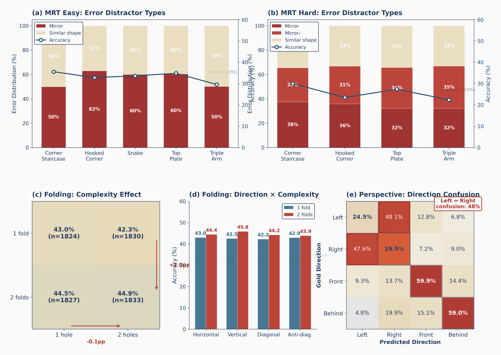
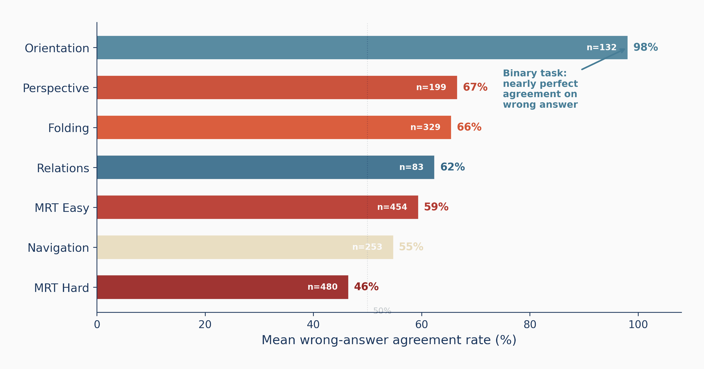
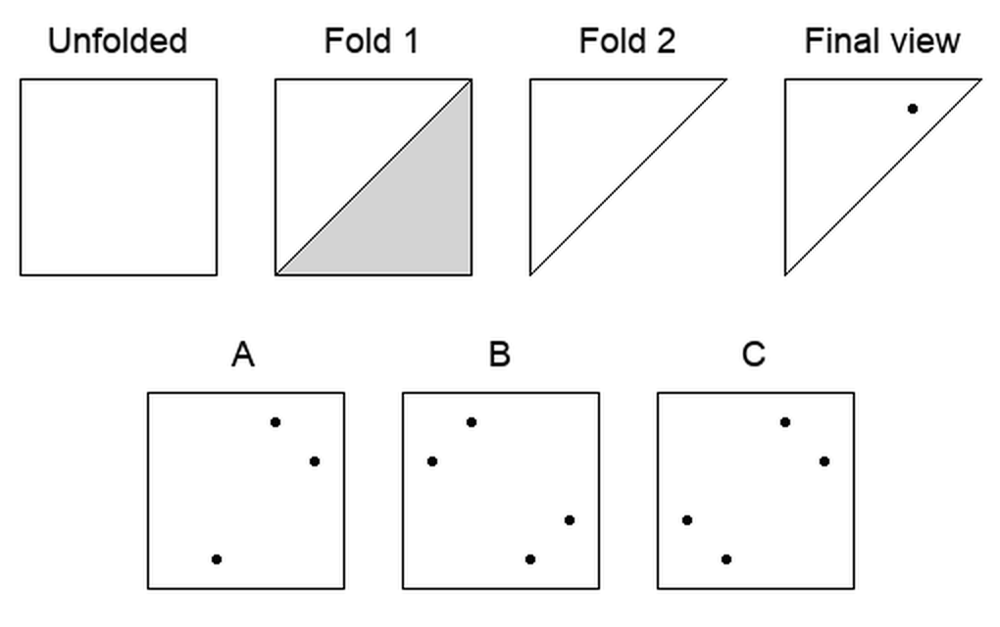
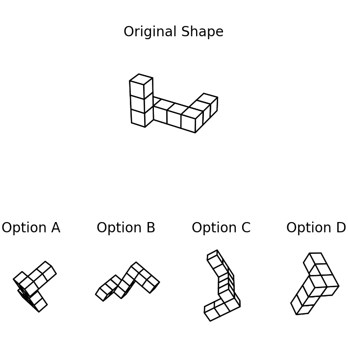

Diagnostics in depth
The evidence behind the gap




Thirty-two multimodal models can extract spatial cues that are already visible in an image. They fail when they must transform those cues — rotate an object, change viewpoint, or update a spatial state.
The headline
Mean accuracy across the same 32 models. Extraction tasks can be answered from the depicted scene. Transformation tasks require the model to change that scene first. On MRT Hard, the mean is chance.
The layout, route, or observer orientation is fully depicted. Nothing in the scene has to change.
Rotate an object, adopt another viewpoint, or unfold a sheet. Chance is 33.3% for Folding and MRT Easy, and 25% for the others.
Abstract
Multimodal Large Language Models can extract many spatial cues from images. Can they reliably work out how those scenes would change under a spatial transformation? We investigate this with seven cognitive-inspired task splits covering 2,855 controlled synthetic and natural-image examples, and evaluate 32 MLLMs from 13 families, ranging from 500M to 402B parameters.
Models do well when the spatial information can be read off the image. Accuracy drops sharply once a task requires a transformation, and the hardest 3D rotations sit at chance. The errors recur: models fail to reverse left and right across viewpoints, and they do not track a sequence of transformations. Neither longer answers nor a larger model removes these failures.
Training can, and only when it trains the transformation. In three 7–8B models, fine-tuning on one transformation task improves the other by 6.0 and 2.7 percentage points at two difficulty levels, and the reverse direction gains 4.3 points. Fine-tuning on static spatial relations does not help. Extracting spatial information does not imply an ability to transform it.
The benchmark
Adapted from psychometric assessments and spatial benchmarks, across object-centric, egocentric, and allocentric frames. Extraction tasks are answered from the depicted scene. Transformation tasks require the scene to change first.
Mean accuracy: Relations 70.0% · Orientation 68.6% · Navigation 46.7%.
36 relations in natural images — from right of/above to attached to, touch, overlapping.
Binary questions on object orientation in a camera-centric, eight-class egocentric taxonomy.
Trace paths through visual mazes, count direction changes, and relate key locations.
Mean accuracy: Folding 39.9% · Perspective 35.5% · MRT Easy 32.2% · MRT Hard 25.0%.

A sheet folded once or twice and hole-punched; pick the unfolded hole pattern from three options.
Adopt another agent's viewpoint. The relation cannot be read from the depicted frame.
Coloured shapes on a 3D Cartesian grid with three choices (one of the two mirror distractors removed).

White polycubes on a blank background, four choices. Identify the rotated original among mirrored distractors.
Results
Overall accuracy and per-split breakdown for all 32 models. Click any column header to sort. Best value per column is highlighted.
| Model | Overall ▾ | Fold. | MRT-E | MRT-H | Nav. | Ori. | Pers. | Rel. |
|---|
Chance is 50% for Orientation, 33.3% for Folding and MRT Easy, and 25% for the four-option splits. Every model lands between 20.0% and 29.4% on MRT Hard. MRT Easy averages 32.2%, slightly below its chance level.
What we found
Beyond aggregate accuracy: which tasks separate models, which errors recur, and which generic remedies leave mental rotation near chance.
Relations average 70.0% and Orientation 68.6%. Transformation is lower: Folding 39.9%, Perspective 35.5%, MRT Easy 32.2% (below its 33.3% chance level), and MRT Hard 25.0%. All 32 models land between 20% and 29.4% on MRT Hard.
Scores run from 18.2% to 95.8% (mean 46.7%), a 77.5 pp range and the strongest correlation with overall rank (r=0.91). The strongest models trace the route; weaker ones produce plausible routes that ignore the image. The required information is extractable.
When the answer is “left,” models choose “right” 48.1% of the time; when it is “right,” they choose “left” 47.6% of the time. Lateral accuracy is 24.5% and 29.5%, against about 59% for front–behind relations.
Accuracy stays between 42.3% and 44.9% across fold count, hole count, and fold direction. Models do not reliably track the extra structure introduced by successive folds.
Incorrect responses average 849 words and correct ones 188, nearly 3× on Navigation and Folding. The pattern holds on every split. It is an association: longer reasoning is not shown to cause the errors.
Against log total parameters, Relations (r=0.69), Navigation (0.57), and Orientation (0.53) scale moderately, and so does Folding (r=0.64). Mental rotation barely moves: MRT Hard r=0.23, MRT Easy r=0.12. Closed-source models average 52.8% against 43.2% open-source; the significant gaps are Navigation (+34.3 pp) and Perspective (+9.5 pp), not MRT.
Diagnostics in depth



Intervention
Three 7–8B models — InternVL3.5-8B, Qwen3-VL-8B, and LLaVA-NeXT-Mistral-7B — are fine-tuned for one epoch with LoRA on a source split only, then evaluated on a held-out task. Source sets are the full splits: 370 Relations, 285 Perspective Taking, or 1,000 MRT items.
| Model | Eval split | Base | Fine-tuned | Δ |
|---|---|---|---|---|
| Fine-tuned on Perspective Taking | ||||
| InternVL3.5-8B | MRT Easy | 32.6 | 35.4 | +2.8 |
| InternVL3.5-8B | MRT Hard | 24.4 | 26.8 | +2.4 |
| Qwen3-VL-8B | MRT Easy | 29.4 | 36.4 | +7.0 |
| Qwen3-VL-8B | MRT Hard | 26.6 | 28.8 | +2.2 |
| LLaVA-NeXT-7B | MRT Easy | 25.2 | 33.4 | +8.2 |
| LLaVA-NeXT-7B | MRT Hard | 24.2 | 27.6 | +3.4 |
| Fine-tuned on MRT | ||||
| InternVL3.5-8B | Perspective | 33.0 | 35.9 | +3.0 |
| Qwen3-VL-8B | Perspective | 28.4 | 34.0 | +5.6 |
| LLaVA-NeXT-7B | Perspective | 30.2 | 34.4 | +4.2 |
| Fine-tuned on Spatial Relations | ||||
| InternVL3.5-8B | MRT Easy | 32.6 | 32.0 | −0.6 |
| InternVL3.5-8B | MRT Hard | 24.4 | 26.0 | +1.6 |
| Qwen3-VL-8B | MRT Easy | 29.4 | 24.4 | −5.0 |
| Qwen3-VL-8B | MRT Hard | 26.6 | 26.4 | −0.2 |
| LLaVA-NeXT-7B | MRT Easy | 25.2 | 25.8 | +0.6 |
| LLaVA-NeXT-7B | MRT Hard | 24.2 | 22.4 | −1.8 |
Base and fine-tuned values are accuracy in percent. The transfer evidence covers one task pair, three 7–8B models, and a single fine-tuning run per configuration.
Qualitative evidence
The same error modes recur across models: correct perception, correct reasoning about the rule, yet the wrong reference frame or the wrong rotation.
Q: Where is the boy from the man's perspective?
"The man is on the left side of the image, and the boy is walking beside him on the man's right-hand side (viewer's right)."
Analysis. The model correctly perceives the boy on the viewer's right. But the man walks toward the camera, so his left and right are mirrored relative to the viewer — the boy is on the man's left. The canonical mirror-inversion error: viewer-frame coordinates mapped onto the subject's frame without the required 180° reference-frame rotation.
Q: Which option is the original shape in a rotated orientation?
"Key fingerprint features preserved under rotation: exactly one cube has 3 neighbours; the branching point is one in from an end … Option B preserves the same connectivity. Therefore, only Option B is a rotated version."
Analysis. The model identifies the right rotation-invariant properties and checks each option — exactly the correct procedure — yet answers wrong. A reasoning–perception decoupling: it articulates what should be invariant under rotation but cannot reliably perceive whether those invariants hold in the 3D rendering.
Q: Which hand is the man using to pat the dog?
"The hand patting the dog is the one not holding the phone, which is his right hand."
Analysis. The exclusion logic is valid, but the laterality label is wrong. Because the man faces the camera, his left hand appears on the viewer's right. The model conflates image-space position with body-space identity — the mirror-inversion error, at the level of body parts.
Cite
@misc{stogiannidis2026mindthegap, title = {Mind the Gap: A Diagnostic Analysis of Spatial Reasoning in Multimodal Large Language Models}, author = {Ilias Stogiannidis and Steven McDonagh and Sotirios A. Tsaftaris}, year = {2026}, note = {Preprint}, url = {https://stogiannidis.github.io/projects/mind-the-gap}, }
An earlier version appeared as arXiv:2503.19707 — "Mind the Gap: Benchmarking Spatial Reasoning in Vision-Language Models".